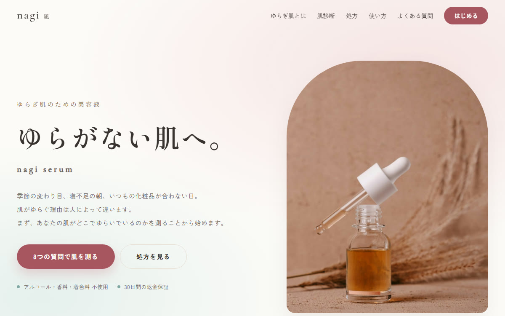
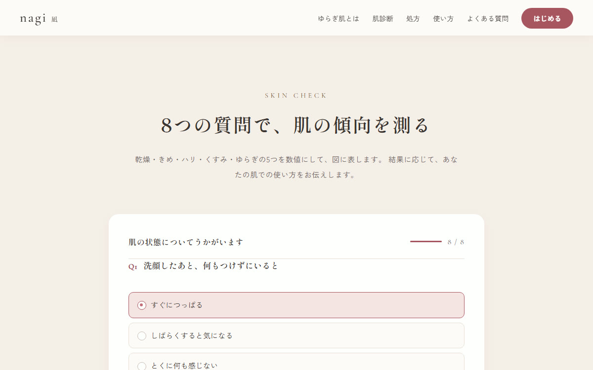
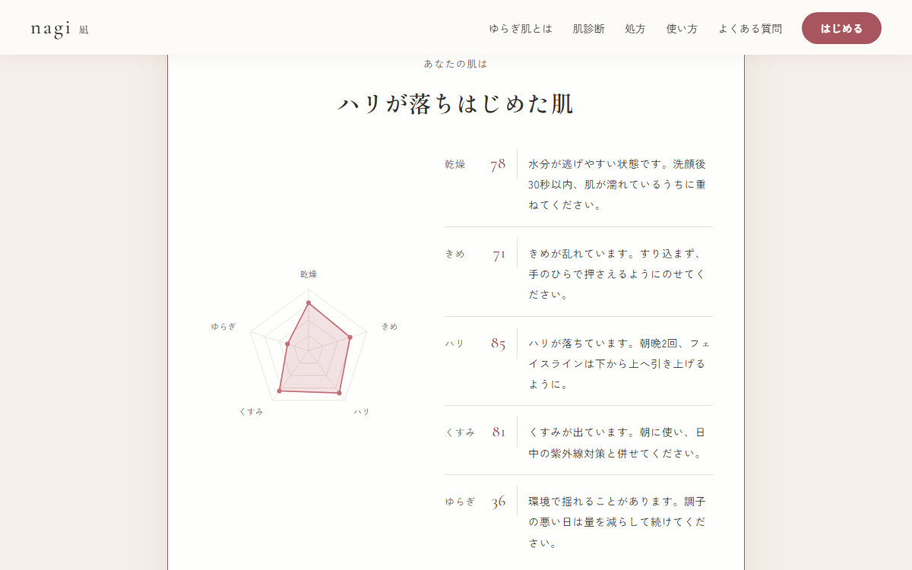

化粧品（スキンケア）／ D2C型ランディングページ
nagi -凪-
季節や体調で肌が揺れる人に向けた、美容液1品の通販ページです。 「あなたに合います」と言い切るのではなく、8つの質問から肌の傾向を数値にして図に表し、その人の肌での使い方を返すところまでを主題にして作りました。



| 種別 | 化粧品の単品通販／架空のブランドを想定した自主制作 |
|---|---|
| 担当範囲 | 企画・構成・デザイン・実装・写真の選定・動作確認 |
| 使用技術 | HTML ／ CSS（BEM設計）／ JavaScript（ライブラリ不使用）／ インラインSVG ／ Node.js（自動確認） |
| 規模 | 1ページ9セクション ／ 診断8問24択・5指標 ／ 自動確認33項目 |
「あなたに合います」は、誰にも刺さらない
化粧品の通販ページは、たいてい成分の説明と使用者の声が並んでいます。読んだ人は「良さそう」とは思いますが、自分の肌に合うかどうかは分からないままです。肌の悩みは人によって違うのに、ページは全員に同じことを言っています。
そこで、買う前に自分の肌を測る導線を主役にしました。8つの質問に答えると、乾燥・きめ・ハリ・くすみ・ゆらぎの5つが0〜100の数値になり、図に表れます。そのうえで、数値に応じて使い方を変えて返します。「ゆらぎ」が高い人には、いきなり顔全体に使わずまず片側の頬だけで3日試すように案内する、といった具合です。
診断が当たるかどうかより、診断結果がそのまま使い方の指示になっていることを重視しました。測って終わりでは、買う理由になりません。
設問を足し引きしても、尺度が変わらないようにする
設問ごとに「どの指標に、どれだけ効くか」という重みを持たせています。たとえば「洗顔後につっぱるか」は乾燥に1.0、きめに0.3です。1つの設問が複数の指標に効きます。
指標の値は、単純に足すのではなく効いた設問の重みの合計で割って出しています。
指標 = Σ(回答 × 重み) ÷ Σ(重み) × 100
単純な足し算にすると、設問を1問増やすたびに満点が動き、「70以上なら高い」といった判定基準を毎回引き直すことになります。割っておけば、設問を足しても減らしても0〜100のままです。実際に、いちばん強い回答で全指標がちょうど100になること、いちばん弱い回答でも0〜20に収まることを自動確認で押さえています。
レーダーチャートを、画像を使わずに描く
結果の図は5角形のレーダーチャートです。画像として用意すると値のぶんだけ枚数が要るので、5つの頂点を三角関数で計算してSVGで描いています。目盛りは4段、軸線は中心から5本です。
値が0でも頂点が中心に潰れて図が読めなくなるため、下限を4%にしてあります。読み上げ環境では図そのものが伝わらないので、<title> と <desc> に「乾燥 78、きめ 71…」と数値を書き出しています。
つまずいた点：軸ラベルの「ゆらぎ」が、枠の外で切れていた
軸のラベルは、頂点のさらに外側（半径の1.24倍）に置かないと図と重なります。ところが描画領域の大きさを半径だけを基準に決めていたため、左端の「ゆらぎ」が枠からはみ出して切れていました。
ラベルを外に出す以上、必要な幅は半径の3.5倍ほどになります。描画領域を広げて中心をずらし、あわせて「どのラベルも枠からはみ出さないこと」を自動確認の項目に足しました。文字の幅は書体で変わるので、目で見て直しただけでは再発します。
明るい配色は、そのままでは文字が読めない
一覧の他の実績が暗い配色に寄っていたので、こちらは白と淡い桃色を基調にしています。ただ、淡い色をそのまま文字に使うと白い地の上でコントラストが足りません。実測したところ、単色の面に載る198要素のうち30件がWCAG AAを下回っていました。
| 箇所 | 変更前 | 変更後 |
|---|---|---|
| 見出しの英字（金） | 2.85 | 5.08 |
| 申し込みボタンの白文字 | 2.79 | 5.08 |
| 設問番号 | 3.53 | 5.19 |
ここで分かったのは、同じ桃色でも、塗りに使うか文字に使うかで必要な濃さが違うということでした。白文字を載せる塗りとして十分な色が、明るい地に置く文字としては薄すぎます。そこで色を1つにまとめず、「塗り」「文字」「装飾」の3つに分けました。チャートの線や点は装飾なので淡いままで構いません。最終的に不足は0件です。
写真は、実在ブランドが写っていないものだけを使う
架空のブランドなので、他社の製品名が写り込んでいるのは具合が悪いです。化粧品のフリー素材は実在の製品を撮ったものが多く、候補9点のうち5点がラベルの文字が読めるという理由で脱落しました。最終的に使ったのは3点で、いずれも有料素材ではないことを配信元の情報で確かめています。
あわせて、写真に合わせて文章のほうを直しました。当初ファーストビューの説明文を「乳白色のガラス瓶」と書いていましたが、実際に選んだのは透明なガラスに琥珀色の液が入ったものです。写真と説明が食い違ったままにしないようにしています。
なお、このページは写真に頼らない作りにしてあります。見せ場のレーダーチャートはSVGで画像を持たず、背景の色味もCSSのグラデーションです。そのぶん写真は3点で足りています。
作ったものが動くか、ブラウザを動かして確かめた
採点・図の描画・フォームと、数字と状態が絡む部分が多いので、実際のブラウザを操作して確認するスクリプトを書きました。33項目あり、すべて通っています。
| 確認した部分 | 件数 | 確かめていること |
|---|---|---|
| 診断の採点 | 5件 | 最強の回答で全指標100、最弱でも0〜20、回答を強めると指標が上がること、3段階の切り分け |
| 診断の画面 | 8件 | 8問24択が描かれること、未回答では押せないこと、回答数の表示の追従、結果と助言5件 |
| レーダーチャート | 6件 | 目盛り4段・軸線5本・頂点5点、軸ラベルが枠からはみ出さないこと、読み上げ用の説明 |
| やり直し | 2件 | 結果が消えること、回答も消えること |
| よくある質問 | 4件 | 開閉、押したものだけが開くこと、支援技術向けの属性 |
| 申し込みフォーム | 2件 | 未入力では送信されないこと、入力が揃うと完了表示になること |
| ページ全体 | 6件 | ページ内リンクの飛び先、全画像の代替テキストと読み込み、横スクロール（PC・スマホ）、エラーが出ていないこと |
つまずいた点：直っているのに、不具合だと判断しかけた
ボタンの配色を確認したとき、直したはずの指定が効いていないように見えました。原因を読み違えたまま、回避用のCSSまで書きました。
実際には、ブラウザのタブが裏に隠れていたのが原因でした。タブが表に出ていないとブラウザはスタイルの再計算を後回しにするため、直後に読んだ値が古いままだったのです。タブを表に出すと正しい値が返りました。
書いた回避用のCSSは、根拠が間違っていたので残さず消しました。動いてしまうコードほど、理由が違っていても気づかないまま残ります。確認スクリプトの先頭には、この注意書きを入れてあります。
JavaScriptが動かない環境でも、読める状態にする
診断はJavaScriptが前提です。動かない環境では診断のボタンを隠して「この診断にはJavaScriptが必要です」と伝え、かわりに処方と使い方の節へ案内しています。よくある質問は全部開いた状態にするので、閉じたまま読めなくなることはありません。
実運用に足りていないもの
お見せするために作ったものなので、実際に売るなら追加が必要です。申し込みフォームは送信処理を持たないデモで、実運用では決済と定期便の管理、次回発送日の変更やスキップの導線が要ります。
診断についても、いまは結果がその場限りです。結果を保存して次に来たときに続きから見せられると、定期便の継続率に効くと考えています。
また、化粧品は書ける表現に制限があります。効能効果の表現が薬機法の範囲を超えないよう、実案件では文言を専門家に確認いただく前提です。このページの「4週間後の変化」もアンケート結果という設定の架空の数値で、効果を示すものではないと明記しています。